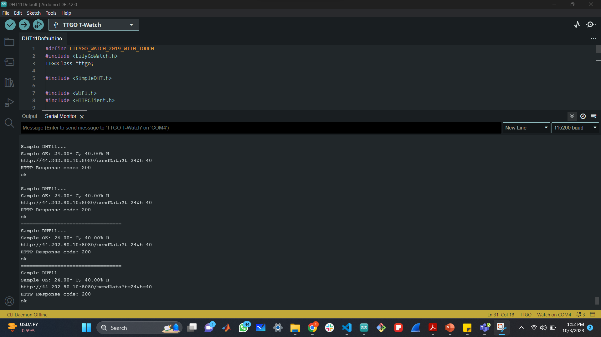
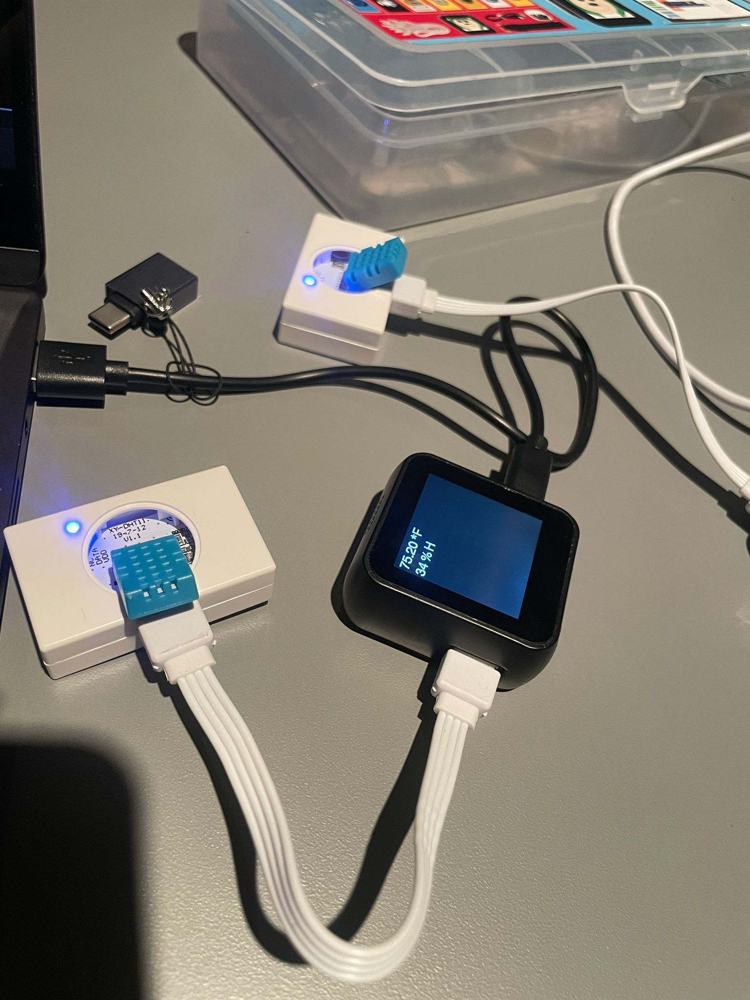
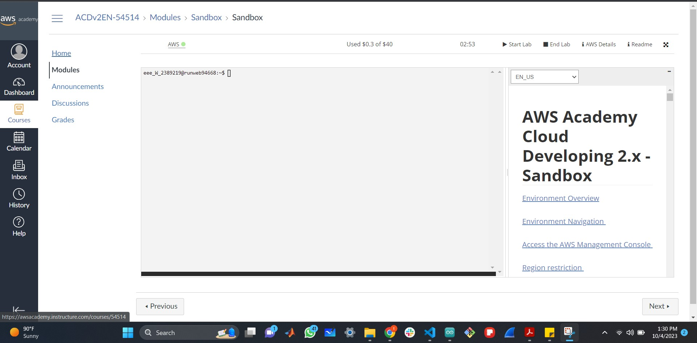
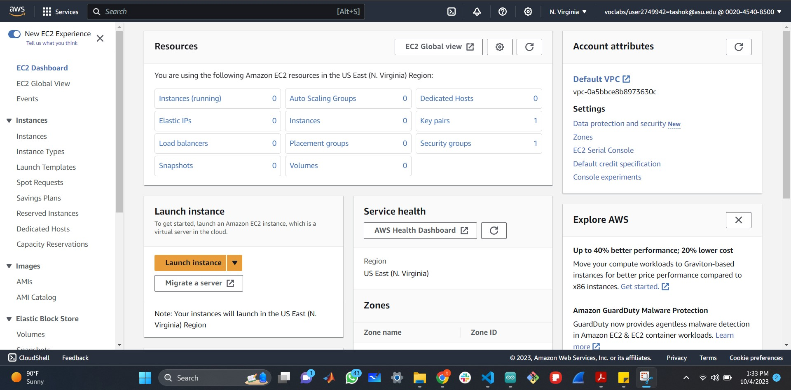
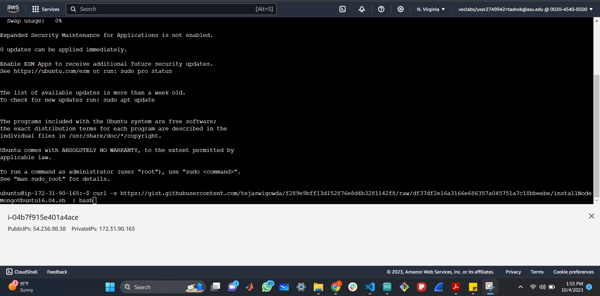
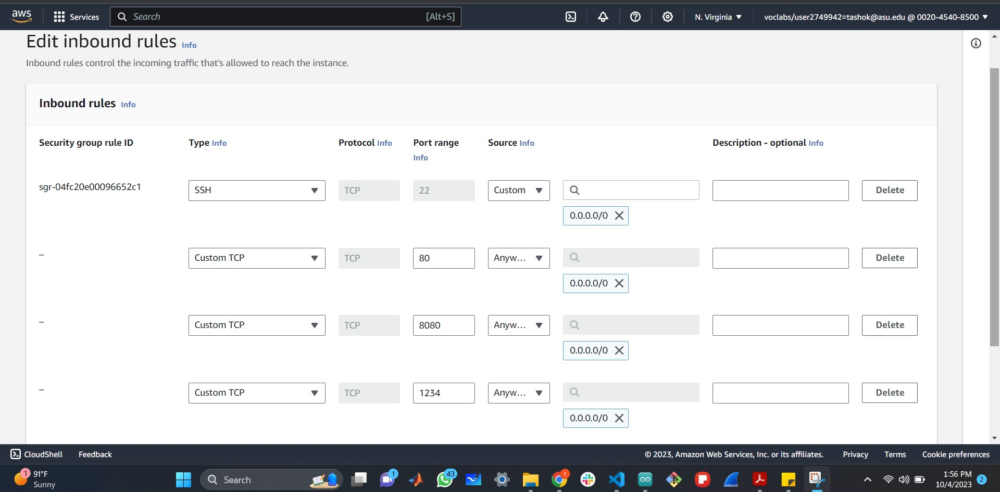

Temperature/Humidity
Connecting the temperature sensor with the cloud
The Role of Arduino
- Open the Arduino IDE
DHT11Default.ino
- Add SimpleDHT library
#include SimpleDHT.h
- Edit the ssid and password
- Edit the Domain name with the IP address connected with the EC2 server
const char* serverName = "http://44.202.80.10:8080/sendData";
- Connect the Temperature sensor to the watch
- Then connect the watch with the microcontroller and compile it
- Check the serial monitor with a HHTP response 200 for successful compilation

- Now the Temperature would be displayed on the watch

The Role of AWS- EC2 server
- Start the lab to work in EC2 server

- Open EC2
- Launch the instance

- To launch an Instance
- Select the Operation system- Ubuntu-20.04 LTS version
- Proceed without a key pair
- Configure the storage to 28Gb
- Add the general purpose SSD- gp2
- Launch the instance
- Click- Connect to EC2 instance Connect
- Create the instance
- Add the curl command to the server
curl -s https://gist.githubusercontent.com/tejaswigowda/f289e9bff13d152876e8d4b3281142f8/raw/df37df2e16a3166e686357a045751a7c18bbeebe/installNodeMongoUbuntu16.04.sh | bash

- Give the following commands on EC2 server
- npm install -g n
- sudo n latest
- sudo npm install -g http-server
- git clone to your own repository
https://github.com/tashok21/AME494598Fall2023.git
- Portmap to map the port number 1234 to 8080
- Give the following commands to do portmap
- Go to the directory: ame498-598Fall2023/watchSensors/captureDataServer-TempHum$
sh portmap.sh
- Edit the Security
- Add Port number- 8080
- Add Port number- 80
- Add Port number- 1234

Arduino and EC2 server
- Run the EC2 server
node server.js
- Then apply the Public IP address obtained on the cloud to the Url with port number 8080
- Since the same IP address is copied on the domain name in Arduino
- Now, the Temperature would be displayed on the url window as well

End of the Task